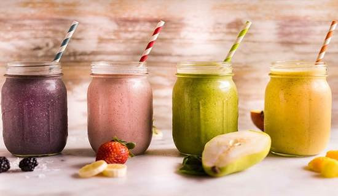
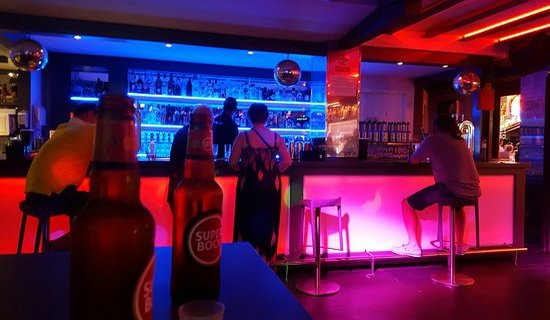
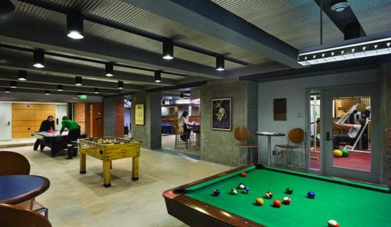

A drink (or beverage) is a liquid intended for human consumption. In addition to their basic function of satisfying thirst, drinks play important roles in human culture. Common types of drinks include plain drinking water, milk, coffee, tea, hot chocolate and soft drinks. In addition, alcoholic drinks such as wine, beer, and liquor, which contain the drug ethanol, have been part of human culture for more than 8,000 years.
PASTA
Pasta is a staple food of traditional Italian cuisine, with the first reference dating to 1154 in Sicily. Also commonly used to refer to the variety dishes made with it, pasta is typically made from an unleavened dough of a durum wheat flour mixed with water or eggs, and formed into sheets or various shapes, then cooked by boiling or baking. Some pastas can be made using rice flour in place of wheat flour to yield a different taste and texture, or for those who wish to avoid products containing gluten.
FRAPPE
Frappé is a Greek foam-covered iced coffee drink made from instant coffee (generally, spray-dried Nescafe), water and sugar. Accidentally invented by a Nescafe representative named Dimitris Vakondios in 1957 in the city of Thessaloniki, frappé is sold primarily in Greece and is among the most popular drinks in Greece and Cyprus, and is available at virtually all Greek cafés. The word frappé is French and means 'chilled in crushed ice'. The frappé has become a hallmark of post-war outdoor Greek coffee culture.

FRUIT SHAKE
A fruit shake is a thick, creamy and cold beverage made from pureed raw fruit, vegetables, and sometimes dairy products, typically using a blender

NIGHT LIFE
Nightlife is a collective term for entertainment that is available and generally more popular from the late evening into the early hours of the morning. It may include pubs, bars, nightclubs, parties, live music, concerts, cabarets, theatre, cinemas, and shows. These venues often require a cover charge for admission. Nightlife entertainment is often more adult-oriented than daytime entertainment. People who prefer to be active during the night-time are called night owls.

ENTERTAINMENT
The answer for an ultimate entertainment evening!! Watch the various shows held every evening and enjoy an exotic cocktail. The Entertainment Bar is equipped with a spectacular stage and supported by hi-tech equipment and lighting systems, ensuring great nights for everyone.